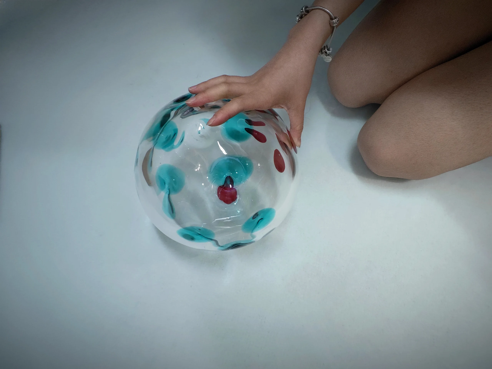
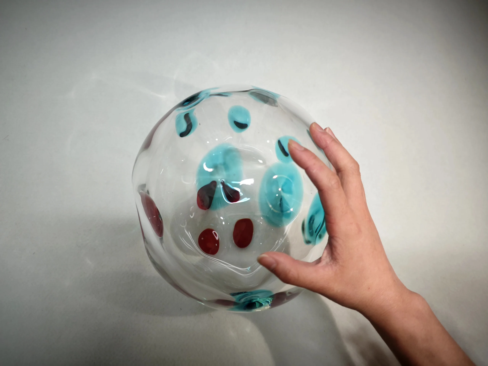
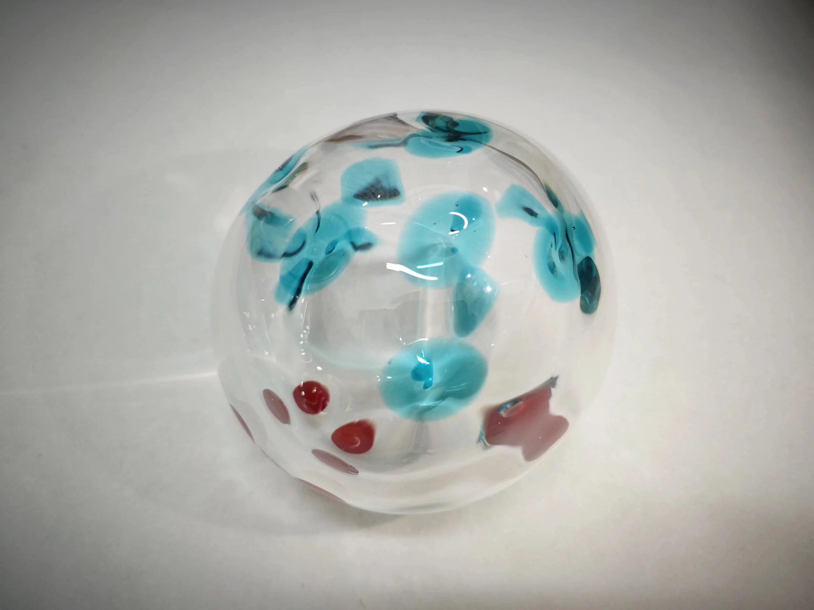
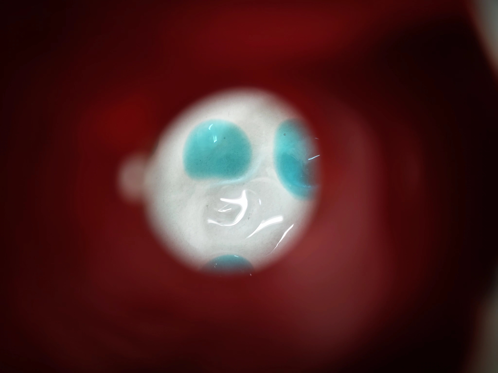

← BACK
DADO
- TECHNIQUES:
- - Técnica mixta: vidrio, manta.
- - Dimensión: 20 x 100 x 100 cm (Dado: 20 x 20 x 20cm; manta: 0,55 x 100 x 100 cm).
- - Shandong, China
Esta obra es una instalación interactiva, emplea dados transparentes que sugieren la apertura de la información. Al transformarse de cubos a esferas, añade incertidumbre y revela propiedades desconocidas.
El vidrio frágil simboliza el riesgo de descubrir la verdad, contrastando con la expresión directa de la cáscara transparente de los dados. Provoca reflexiones sobre la confianza, la autenticidad y la relación entre el mundo interno y externo, invitando a reflexionar sobre la complejidad de la vida y sus percepciones.




